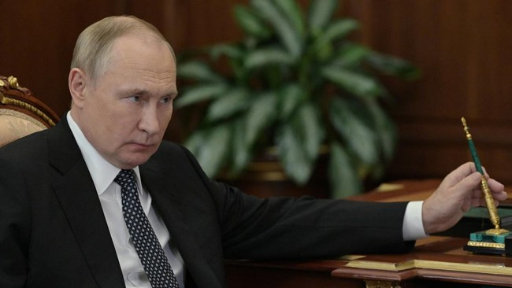

Eks Presiden Rusia Ancam Rudal Markas ICC karena Ingin Tangkap Putin
Mantan Presiden Rusia Dmitry Medvedev mengancam bahwa negaranya akan mengirimkan rudal hipersonik untuk menghancurkan markas Pengadilan Kriminal Internasional (International Criminal Court/ICC) di Den Haag, Belanda.
Ancaman itu dilontarkan Medvedev usai ICC mengeluarkan perintah menangkap Presiden Vladimir Putin karena dianggap melakukan kejahatan perang di Ukraina.
ICC mengeluarkan perintah penangkapan setelah mendapat laporan bahwa Rusia melakukan deportasi anak-anak Ukraina korban perang ke negaranya di luar ketentuan hukum internasional.
"Para hakim ICC bersemangat dengan sia-sia. Lihatlah, kata mereka 'kami berani dan kami mengangkat tangan melawan negara nuklir terbesar tanpa membahayakan kami sendiri.' Aduh, tuan-tuan. Semua orang berjalan di bawah (kehendak) Tuhan dan rudal," ujar Medvedev dalam channel Telegram, seperti dikutip dari The Newsweek.
"Sangat mungkin untuk membayangkan penggunaan rudal hipersonik 'Onyx' yang ditargetkan dari kapal perang Rusia di Laut Utara ke gedung pengadilan Den Haag," ia menambahkan.
Medvedev juga mempertanyakan ICC sebagai badan peradilan yang dianggapnya tidak netral.
"Pengadilan itu hanya organisasi internasional yang menyedihkan, bukan populasi dari negara-negara NATO. Itu sebabnya mereka tidak akan memulai perang. Mereka akan takut," tutur Medvedev.
"Tidak ada yang akan merasa kasihan pada mereka. Jadi, para hakim pengadilan, lihat baik-baik ke arah langit," ujarnya lagi.
Sementara itu, ICC enggan memberikan tanggapan terkait komentar ancaman yang disampaikan Medvedev, demikian laporan dari Newsweek.
Sebelumnya, Kremlin menyatakan keputusan ICC yang mengeluarkan surat perintah penangkapan terhadap Putin secara hukum batal
Moskow tidak mengakui yurisdiksi pengadilan yang berbasis di Den Haag itu.
"Rusia, seperti sejumlah negara lain, tidak mengakui yurisdiksi pengadilan ini dan dari sudut pandang hukum, keputusan pengadilan ini batal," kata juru bicara Kremlin Dmitry Peskov, dikutip dari AFP, Jumat (17/3).
Rusia bukan anggota ICC. Juru bicara Kementerian Luar Negeri Rusia Maria Zakharova mengatakan keputusan ICC tidak ada artinya bagi Rusia.
"Rusia bukan pihak Statuta Roma Pengadilan Kriminal Internasional dan tidak memiliki kewajiban di bawahnya," katanya di Telegram.
Sumber berita www.cnnindonesia.com